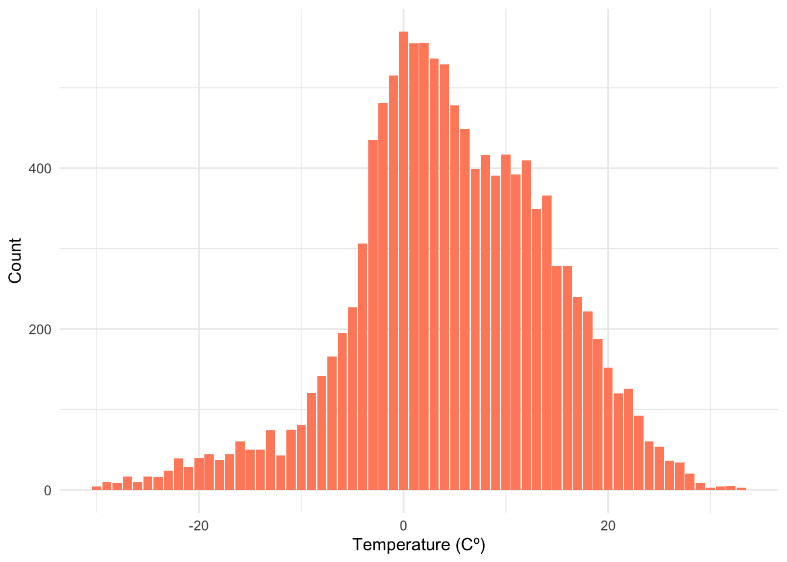
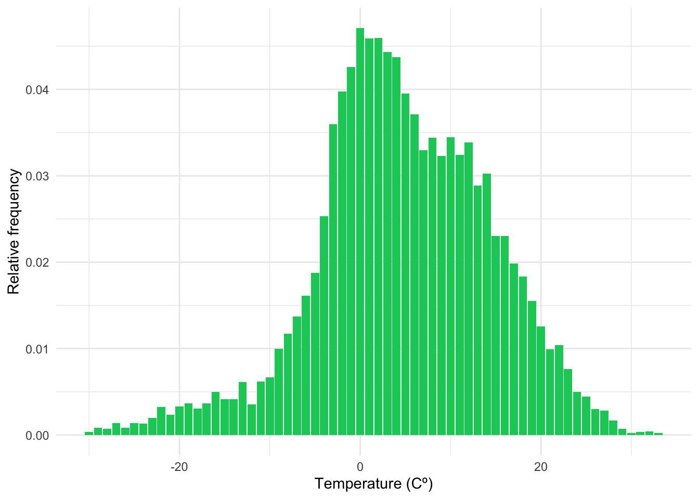
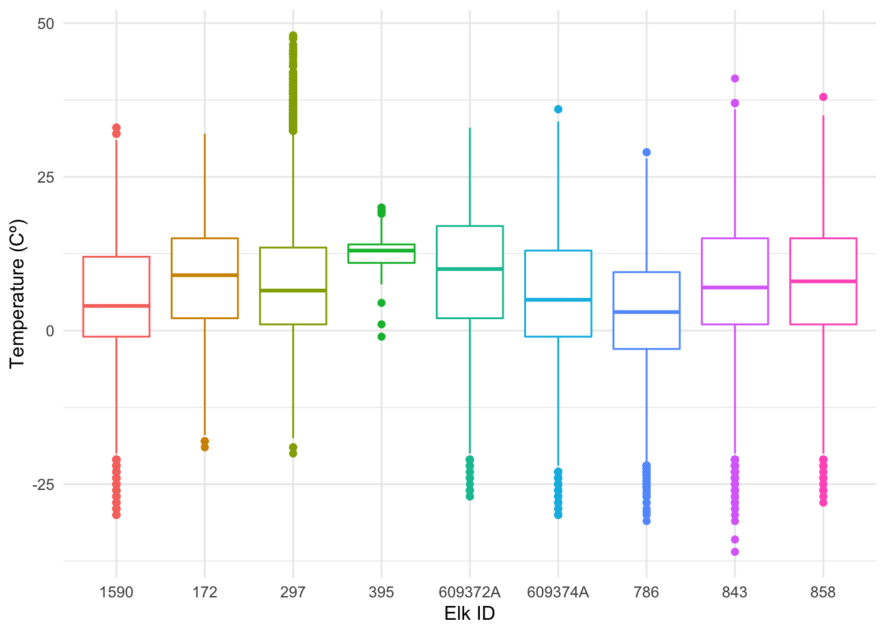
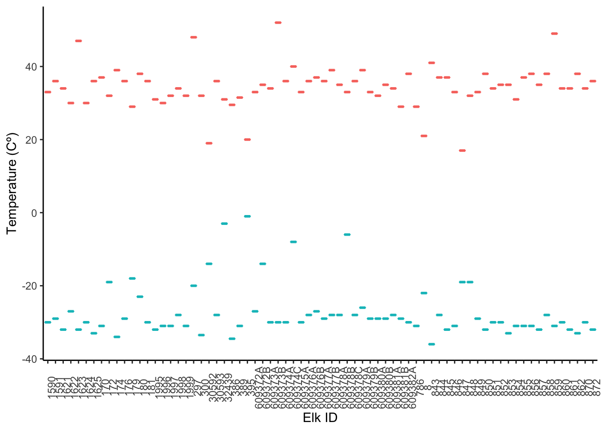

Chapter 3 Temperature
I was interested in looking at the distribution of temperatures across the study site, especially since it took place in southwestern Alberta and northern Montana; places where I would assume the weather is fairly mild in the summer and cold in the winter.
I selected one elk, 1590, from the dataset to look at the ambient temperatures it experienced over the course of its location points. I plotted it to show the range of temperatures an elk has to live through on a yearly basis.
gps %>%
select(temp_c, elk_id) %>%
filter(elk_id == "1590") %>%
ggplot(aes(x = temp_c, fill = elk_id)) +
geom_bar(fill = "salmon1") +
labs(x = "Temperature (Cº)", y = "Count",
fill = "Elk ID") +
theme_minimal() +
theme(legend.position = "none")
Then, I used the data from the same elk to create another plot with the frequency for each temperature.
gps %>%
select(temp_c, elk_id) %>%
filter(elk_id == "1590") %>%
ggplot(aes(x = temp_c, fill = elk_id)) +
geom_bar(aes(y = ..prop.., group = 1), fill = "springgreen3") +
labs(x = "Temperature (Cº)", y = "Relative frequency", fill = "Elk ID") +
theme_minimal() +
theme(legend.position = "none")
Luckily, the most frequent temperatures for the elk were between -3ºC to 12ºC or about 26ºF to 54ºF.
I assumed temperatures would fluctuate largely due to seasonal changes but I was surprised to see the wide range of temperatures that elk lived through on the study site. It looks like the elk experienced anywhere from -28ºC to around 30ºC!
Finally, I took 8 other elk in addition to elk 1590 and plotted the temperatures they experienced.
gps %>%
select(temp_c, elk_id) %>%
filter(elk_id %in% c("1590", "786", "297", "609374A", "395",
"609372A", "858", "843", "172")) %>%
ggplot(aes(x = elk_id, y = temp_c, color = elk_id)) +
geom_boxplot() +
labs(y = "Temperature (Cº)", x = "Elk ID",
color = "Elk ID") +
theme_minimal() +
theme(legend.position = "none")
Overall, it looks like elk experience a range of 0ºC to 10ºC on average with some high and low outliers!
Because of the temperature extremes I noticed while plotting the previous graphs, I created a new plot to show every elk and the maximum and minimum temperatures recorded for each. I removed the 26 elk that had missing temperature data.
gps %>%
group_by(elk_id) %>%
mutate(max_temp = max(temp_c)) %>%
mutate(min_temp = min(temp_c)) %>%
filter(!is.na(max_temp)) %>%
distinct(elk_id, max_temp, min_temp, temp_c) %>%
ggplot(aes(x = elk_id)) +
geom_boxplot(aes(y = max_temp, color = "darkred")) +
geom_boxplot(aes(y = min_temp, color = "royalblue3")) +
labs(x = "Elk ID", y = "Temperature (Cº)", color = "Elk ID") +
theme_classic() +
theme(axis.text.x = element_text(angle = 90)) +
theme(legend.position = "none") 
The plot is a little overwhelming and doesn’t tell us too much, but it is still interesting to see the temperature extremes (high and low) throughout the seasons in Alberta.